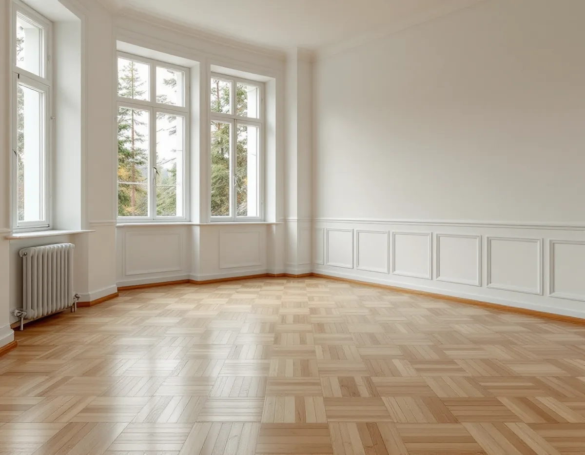
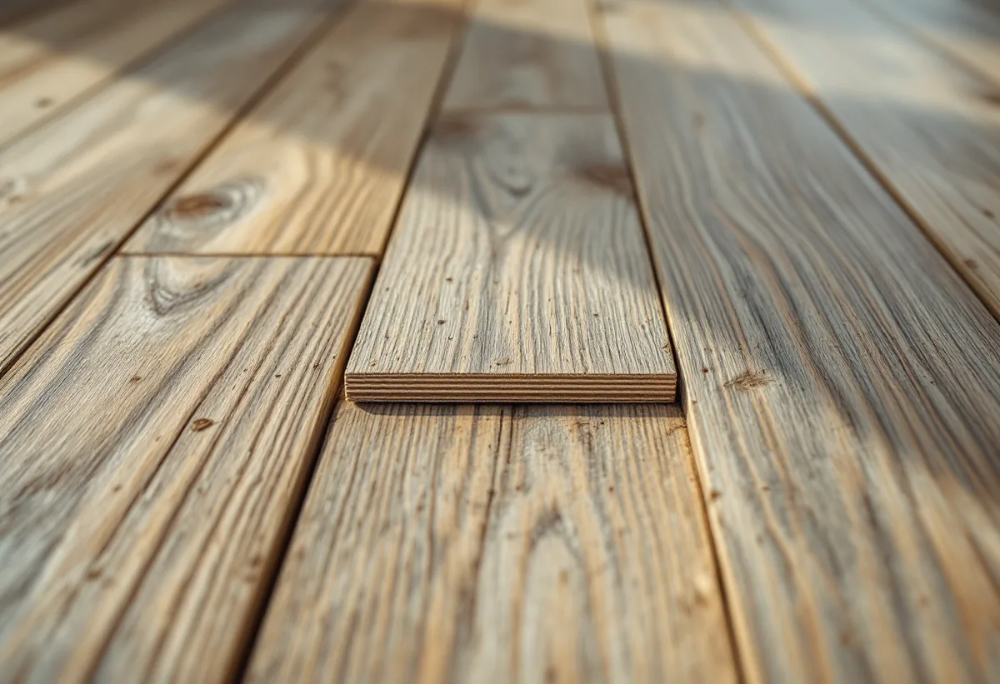

Platsbesök
Vi mäter ned till sponten på flera ställen och tar reda på hur golvet är behandlat i dag.
En parkett som har legat sedan 1940-talet kan ha slipats flera gånger redan. Innan nästa slipning behöver man veta hur mycket trä som finns kvar ovanför sponten, och om golvet kanske kan få liv utan att slipas alls. Geal Entreprenad AB slipar och ytbehandlar trägolv i lägenheter och villor i Hägersten, och vi börjar med att mäta och prova.

Stockholms stadsmuseum beskriver i serien Stockholms spår hur Hägerstensåsen före 1938 var en skogsklädd bergsrygg och ett populärt friluftsområde. På stadens mark byggdes bara trevånings smalhus, medan det på den norra delen även uppfördes punkthus i sex våningar och villor. De första husen blev färdiga 1939 och de sista var inflyttningsklara 1948. Andelen smålägenheter var mycket stor, och tunnelbanestationen invigdes 1964.
I stadens områdesfakta för 2025 har Hägerstensåsen 4 904 bostäder, och 4 712 av dem ligger i flerbostadshus. Det finns 2 034 bostadsrätter och 2 657 hyresrätter utanför allmännyttan. Stadsdelen Hägersten har däremot en större andel villor och radhus: 994 av 4 526 bostäder ligger i småhus.
Många av lägenheterna har alltså funnits i omkring 80 år. Under den tiden kan ett golv ha hunnit slipas, lackas och oljas av flera ägare, och det är det som avgör vad som går att göra nu.

I Svenska Byggnadsvårdsföreningens frågespalt beskriver en läsare en lägenhet från 1943 i Stockholms närförort med ett ljust parkettgolv i hallen. Föreningen förklarar att läggningsmönstret kallas holländsk parkett och att ljusa träslag kan vara björk, ask eller lönn. Mönstret passade bra efter att lamellbrädan lanserades på 1930-talet, uppbyggd av krysslimmade furulameller med en slityta av lövträ.
I en annan fråga beskriver föreningen hur 1930-talets lamellgolv hade en ekyta på några millimeter som limmades på träfanér och lades flytande, utan infästning i underlaget. Under senare halvan av 1900-talet blev lamellgolven dominerande, med alla stavar i samma riktning eller i holländskt mönster där en fyrkant av korta tvärgående stavar växlar med långa stavar.
Föreningen skriver också att ek dominerar dagens utbud och att det kan vara svårt att hitta ett likadant golv i ljust lövträ hos de stora golvtillverkarna. Som alternativ med liknande ljushet och lyster nämner föreningen lamellgolv med hela längder av björk. Har du en sådan parkett kan det alltså vara svårt att ersätta den med en likadan.
En golvslipning med golvslipmaskin tar enligt föreningen bort cirka 0,5 till 1 millimeter av parketten, och djupare märken än så kan alltså synas även efter slipningen. En lamellparkett brukar kunna slipas 2 till 4 gånger. I ett svar om en lamellparkett från 1961 anger föreningen att slitskiktet normalt är 4 millimeter och går att slipa någon gång.
Hur mycket som finns kvar på just ditt golv kan man se. Föreningen beskriver hur man stoppar ned ett rakblad i en liten glipa mellan stavarna där golvet har mest slitage, för att se hur långt ned sponten sitter. Det gör vi vid platsbesöket, gärna på flera ställen. I en annan fråga, om en lägenhet från 1967, hade byggarna bedömt att parketten var för tunn för att slipas, och då är det bättre att veta det innan maskinen startar än efter.
Är du osäker på om golvet är massivt eller en lamellparkett finns det mer om skillnaden på sidan om golvslipning i Sollentuna.
En ekparkett som inte underhållsoljas eller vaxas grånar, skriver föreningen, eftersom solens UV-ljus bryter ned träets lignin. Lack minskar åldringen men ser inte lika levande ut, och skador syns tydligare. Ek tål att slipas fler gånger än andra träslag eftersom träet är så hårt. Har golvet tidigare fått en pigmenterad olja kan den ha trängt in olika djupt, och då finns risk att resultatet blir flammigt.
Föreningen föreslår därför att man först provar att olja en undanskymd del utan att slipa. Räcker det inte kan man fortsätta med en lättare slipning med en oscillerande maskin tills ytan blir jämn, och sedan olja. Innan något läggs på behöver man ta reda på vad golvet är behandlat med i dag, så att den nya ytan fungerar ihop med den gamla.
Glipor mellan två skivor som inte går att slå ihop kan få en tunn list ilimmad, och lösa bitar limmas tillbaka och pressas ned med en tyngd tills limmet har torkat. Gäller frågan i stället ett nytt golv i källaren eller suterrängvåningen finns det mer under golvläggare i Hägersten.
Vi mäter ned till sponten på flera ställen och tar reda på hur golvet är behandlat i dag.
En undanskymd del oljas utan slipning, så att du ser om det räcker.
Lagning, slipning och ytbehandling står som egna poster.
Lösa bitar limmas och glipor fylls med tunna lister.
Golvet slipas så lätt som möjligt för att spara slitskiktet.
Olja eller lack läggs på, och vi går igenom skötseln med dig.
Skatteverket räknar slipning av golv som rotarbete. I en bostadsrätt ska arbetet göras innanför bostadens väggar, tak och golv, och du ska ha underhållsansvaret enligt föreningens stadgar. I en villa eller ett radhus som du äger och bor i gäller avdraget arbete i bostaden.
Avdraget är 30 procent av arbetskostnaden, högst 50 000 kr per person och år och högst 75 000 kr tillsammans med rutavdrag. Material och resor ger inget avdrag. Geal drar avdraget direkt på fakturan.
Golvytan, hur mycket som behöver lagas, om provet räcker eller om golvet måste slipas, och vilken ytbehandling du väljer. Efter ett gratis platsbesök får du ett skriftligt kostnadsförslag.
Parkett, trägolv, klinker och slipning.
Golvläggning i Stockholm →Takbyte, takbesiktning och plåtarbeten.
Takläggare i Hägersten →Kuperad tomt, stödmur och dränering.
Byggföretag i Hägersten →Trävillor, färglager och skonsam färgborttagning.
Fasadmålning i Hägersten →Småstugor, typritningar och panel.
Fasadrenovering i Hägersten →Golv i källare och suterrängvåning.
Golvläggare i Hägersten →Efterkrigstidens lägenheter och asbestprov.
Köksrenovering i Hägersten →Lägenheter, villor vid Mälaren och radhus.
Målare i Hägersten →Låglutande tak och takavvattning i Hägersten.
Plåtslagare i Hägersten →Verandor, dörrar och snickeridetaljer på villan.
Snickare i Hägersten →